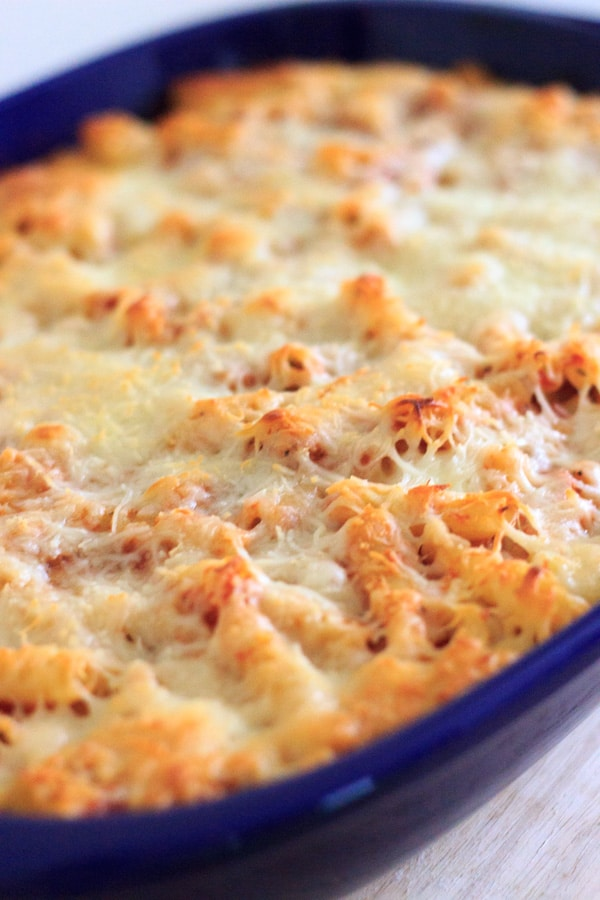

Delicious Meatless Baked Ziti

Description
Ever want a fast, easy to make, delicious, low on fat but high in carb meal, well.. look no further becuase you can make this Meatless Baked Ziti under an hour by following the steps provided!
Ingredients
- Olive Oil cooking spray
- 1 (16 ounce) package ziti pasta
- 1 tablespoon olive oil
- 1/2 (8 ounce) package fresh spinach, chopped
- 1 (4 ounce) package fresh mushroom, sliced
- 1 (15 ounce) container part-skim ricotta cheese
- 1 (8 ounce) package crumbled goat cheese
- 1/2 (8 ounce) package shredded mozzarella cheese
- 1 (14 ounce) jar spaghetti sauce
Steps
- Preheat the oven to 350 degrees F (175 degrees C). Spray a 9x13-inch baking pan with cooking spray
- Bring a large pot of lightly salted water to a boil. Add ziti and cook, stirring occasionally, until tender yet firm to the bite, about 8 minutes. Drain and transfer to a large bowl.
- Heat olive oil in a skillet over medium-high heat. Saute spinach and mushrooms in the hot oil until soft, about 5 minutes. Remove from heat and add to ziti.
- Add ricotta cheese, goat cheese, and 1/2 of the mozzarella cheese to the ziti mixture;combine thorougly. Mix in spaghetti sauce and transfer to the prepared baking pan. Sprinkle with remaining mozzarella cheese.
- Bake, uncover, in the preheated oven until bubbly and cheese is melted, about 15 minutes.